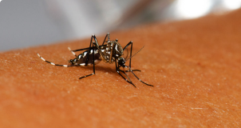

Saúde
Segunda - 04/03/2024
Dengue: clima, água parada e falhas do poder público causaram explosão de casos
Tudo indica que o Brasil enfrentará em 2024 a pior epidemia de dengue da história.
Saiba mais
Ambiental
Sábado - 15/03/2024
Berço das águas, Cerrado tem recursos hídricos pressionados pelo desmatamento
"Bioma-coração", o Cerrado, localizado na parte central do Brasil, tem mais do que uma posição geográfica estratégica
Saiba mais
Ambiental
Sábado - 09/02/2024
Mudanças climáticas ameaçam a Caatinga com desertificação e perda de espécies
Os notórios efeitos das mudanças climáticas devem atingir severamente a Caatinga nas próximas décadas
Saiba mais